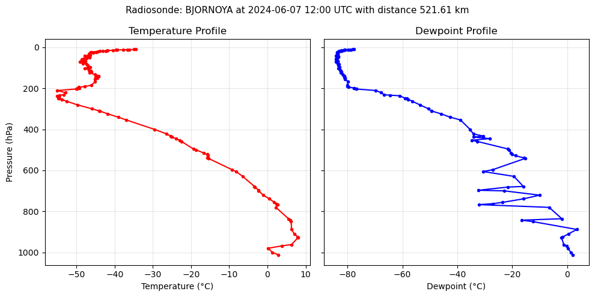

Radiosonde Atmosphere Generator#
In this notebook, we’ll use pyRadtran’s RadiosondeAtmosphereGenerator to download radiosonde profiles from the IGRA database and convert them into atmosphere files compatible with libRadtran. This allows us to run simulations with realistic, observation-based atmospheric profiles.
How It Works#
The generator:
Downloads the global IGRA v2 station list from NOAA/NCEI
Finds the closest active radiosonde stations to your target location using the Haversine formula
Queries the IGRA database (via the Siphon library) for the nearest available sounding in time
Converts the sounding (pressure, temperature, dewpoint) into a libRadtran
radiosondeatmosphere file
The output file contains columns: p (hPa), T (K), H₂O (RH %), sorted from top-of-atmosphere to surface.
Note
Retrieving radiosonde data from the IGRA database can take 3–5 minutes. IGRA data availability typically lags by a few weeks to months. If you get an InputGenerationError saying no data was found, try an older date.
Requirements#
The radiosonde generator requires the siphon package, which is an optional dependency of pyRadtran:
pip install siphon
# or
conda install -c conda-forge siphon
# or
micromamba install siphon
# Check that siphon is installed
try:
from siphon.simplewebservice.igra2 import IGRAUpperAir
print("siphon is available ✓")
except ImportError:
raise ImportError(
"siphon is required for the radiosonde generator. "
"Install it with: pip install siphon"
)
# Set up logging
import logging
logging.basicConfig(level=logging.INFO)
logging.getLogger("pyradtran").setLevel(logging.INFO)
siphon is available ✓
Example 1: One-Step Atmosphere File Generation#
The simplest way to get a radiosonde atmosphere file is with RadiosondeAtmosphereGenerator.create_radiosonde_atmosphere_file(). You provide a target time and location — the generator finds the closest station and sounding automatically.
from datetime import datetime
from pathlib import Path
from pyradtran.io import RadiosondeAtmosphereGenerator
# Target: Ny-Ålesund, Svalbard
lat, lon = 78.925, 11.922
# Create the atmosphere file in one step
atm_path = RadiosondeAtmosphereGenerator.create_radiosonde_atmosphere_file(
time=datetime(2024, 6, 7, 12), # use a date that is well in the past for IGRA availability
latitude=lat,
longitude=lon,
output_filepath="work/sonde_nya.dat",
)
print(f"Atmosphere file created at: {atm_path}")
INFO:pyradtran.io:Found sounding for BJORNOYA at 2024-06-07 12:00:00 UTC with distance 521.61 km
INFO:pyradtran.io:Created radiosonde atmosphere file: work/sonde_nya.dat
Atmosphere file created at: work/sonde_nya.dat
Inspect the Generated File#
The output is a simple text file that libRadtran reads directly via the radiosonde input option. Each row is one pressure level with pressure (hPa), temperature (K) and relative humidity (%).
# Inspect the generated atmosphere file
print(Path("work/sonde_nya.dat").read_text())
# Radiosonde atmosphere profile
# BJORNOYA at 2024-06-07 12:00 UTC with distance 521.61 km
# p(hPa) T(K) h2o(RH%)
10.49 238.75 0.471
10.60 238.15 0.469
11.34 236.95 0.466
11.51 236.55 0.463
11.93 235.35 0.460
12.64 233.75 0.461
12.85 233.65 0.465
13.44 233.45 0.460
14.17 232.75 0.463
16.15 231.25 0.483
17.15 230.75 0.518
17.63 231.05 0.502
18.76 230.05 0.481
19.18 229.25 0.533
20.00 228.75 0.517
22.65 226.85 0.606
24.97 228.25 0.565
27.51 227.55 0.561
29.17 226.55 0.616
30.00 226.65 0.609
31.98 226.35 0.651
34.20 226.65 0.619
37.73 226.75 0.633
40.72 226.15 0.633
42.60 225.35 0.669
43.85 225.65 0.681
44.95 226.45 0.666
47.76 226.55 0.659
50.00 226.65 0.640
54.17 225.85 0.666
56.99 224.95 0.688
58.42 224.45 0.741
59.70 224.65 0.749
67.49 225.45 0.720
68.85 225.45 0.720
70.00 225.05 0.704
71.29 224.25 0.771
71.89 224.05 0.775
78.13 224.85 0.783
81.60 225.85 0.761
86.94 226.15 0.700
96.62 226.75 0.700
100.00 226.05 0.732
100.12 226.05 0.732
102.44 225.35 0.779
110.70 226.45 0.761
114.75 226.95 0.744
120.21 227.05 0.761
123.71 226.65 0.757
133.34 227.95 0.749
138.63 228.25 0.761
141.34 228.95 0.729
141.52 228.95 0.729
146.75 228.15 0.808
150.00 228.65 0.804
154.38 228.05 0.858
168.46 228.05 1.008
184.20 227.05 1.090
191.46 225.35 1.317
193.98 223.75 1.710
198.40 223.85 2.248
200.00 223.35 2.418
203.04 223.25 2.770
203.35 223.05 2.834
210.61 218.15 14.506
220.68 220.25 14.743
231.34 219.85 18.254
233.33 218.65 27.658
236.23 218.05 47.792
248.14 218.35 59.508
250.00 218.65 62.681
253.73 219.35 60.590
263.79 220.65 63.300
280.74 223.45 63.384
300.00 227.25 59.513
309.82 229.05 54.847
310.95 229.25 54.914
324.39 231.35 64.235
340.48 234.05 68.565
353.98 236.15 82.408
400.00 243.55 57.085
422.16 246.75 47.779
432.97 247.75 62.353
437.45 248.15 42.081
445.20 249.15 67.592
453.16 250.15 33.178
459.13 250.65 38.983
495.38 253.75 81.947
500.00 254.45 79.935
515.02 256.45 72.378
522.52 257.35 69.509
528.28 257.55 75.776
539.37 257.35 100.000
542.07 257.75 100.000
596.59 263.85 22.065
605.65 264.95 14.603
629.40 266.65 35.168
678.38 269.75 37.065
681.53 269.85 22.628
697.09 270.85 7.935
700.00 270.85 18.904
720.90 272.05 50.437
738.72 273.65 28.066
755.93 274.95 13.304
762.70 275.55 9.122
767.00 275.75 5.617
780.44 275.35 52.178
835.80 278.65 58.471
842.91 279.15 17.948
850.00 279.35 24.786
888.20 279.45 82.262
909.02 280.15 63.282
925.00 281.05 50.687
927.70 281.15 48.881
961.94 279.45 58.247
968.07 276.95 74.579
979.73 273.35 100.000
1000.00 274.45 100.000
1011.60 275.95 94.466
Example 2: Step-by-Step — Station Search and Data Retrieval#
If you need more control, you can use the individual static methods to find stations and retrieve soundings separately.
# Step 1: Get the global IGRA station list
stations = RadiosondeAtmosphereGenerator.get_station_list()
print(f"Total IGRA stations: {len(stations)}")
stations.head()
Total IGRA stations: 2923
| id | latitude | longitude | elevation | state | name | first_year | last_year | num_obs | |
|---|---|---|---|---|---|---|---|---|---|
| 0 | ACM00078861 | 17.1170 | -61.7830 | 10.0 | NaN | COOLIDGE FIELD (UA) | 1947 | 1993 | 13896 |
| 1 | AEM00041217 | 24.4333 | 54.6500 | 16.0 | NaN | ABU DHABI INTERNATIONAL AIRPOR | 1983 | 2026 | 41254 |
| 2 | AEXUAE05467 | 25.2500 | 55.3700 | 4.0 | NaN | SHARJAH | 1935 | 1942 | 2477 |
| 3 | AFM00040911 | 36.7000 | 67.2000 | 378.0 | NaN | MAZAR-I-SHARIF | 2010 | 2014 | 2179 |
| 4 | AFM00040913 | 36.6667 | 68.9167 | 433.0 | NaN | KUNDUZ | 2010 | 2013 | 4540 |
# Step 2: Find the 5 closest active stations to Ny-Ålesund
closest = RadiosondeAtmosphereGenerator.find_closest_active_stations(stations, lat, lon, n=5)
closest[['id', 'name', 'latitude', 'longitude', 'distance_km']]
| id | name | latitude | longitude | distance_km | |
|---|---|---|---|---|---|
| 1993 | SVM00001004 | NY-ALESUND II | 78.9233 | 11.9222 | 0.189080 |
| 1994 | SVM00001028 | BJORNOYA | 74.5167 | 19.0047 | 521.610006 |
| 860 | GLM00004320 | DANMARKSHAVN | 76.7694 | -18.6681 | 744.833867 |
| 1725 | RSM00020046 | POLARGMO IM. E.T. KRENKELJA | 80.6264 | 58.0589 | 903.903991 |
| 1241 | JNM00001001 | JAN MAYEN | 70.9331 | -8.6667 | 1056.578900 |
# Step 3: Retrieve the closest sounding
# Enable debug logging to see station-by-station search progress
logging.getLogger("pyradtran").setLevel(logging.DEBUG)
sounding_df, header, header_text = RadiosondeAtmosphereGenerator.get_closest_sounding(
target_dt=datetime(2024, 6, 7, 12),
lat=lat,
lon=lon,
)
print(f"Station: {header_text}")
print(f"Sounding levels: {len(sounding_df)}")
sounding_df.head(10)
DEBUG:pyradtran.io:Trying station NY-ALESUND II (SVM00001004) at 2024-06-07 12:00:00
DEBUG:pyradtran.io:No data for NY-ALESUND II at 2024-06-07 12:00:00: No dates match selection. This selection has data from 1992-10-06 12:00:00 to 1992-10-06 12:00:00.
DEBUG:pyradtran.io:Trying station NY-ALESUND II (SVM00001004) at 2024-06-07 00:00:00
DEBUG:pyradtran.io:No data for NY-ALESUND II at 2024-06-07 00:00:00: No dates match selection. This selection has data from 1992-10-06 12:00:00 to 1992-10-06 12:00:00.
DEBUG:pyradtran.io:Trying station NY-ALESUND II (SVM00001004) at 2024-06-06 12:00:00
DEBUG:pyradtran.io:No data for NY-ALESUND II at 2024-06-06 12:00:00: No dates match selection. This selection has data from 1992-10-06 12:00:00 to 1992-10-06 12:00:00.
DEBUG:pyradtran.io:Trying station NY-ALESUND II (SVM00001004) at 2024-06-06 00:00:00
DEBUG:pyradtran.io:No data for NY-ALESUND II at 2024-06-06 00:00:00: No dates match selection. This selection has data from 1992-10-06 12:00:00 to 1992-10-06 12:00:00.
DEBUG:pyradtran.io:Trying station BJORNOYA (SVM00001028) at 2024-06-07 12:00:00
INFO:pyradtran.io:Found sounding for BJORNOYA at 2024-06-07 12:00:00 UTC with distance 521.61 km
Station: BJORNOYA at 2024-06-07 12:00 UTC with distance 521.61 km
Sounding levels: 119
| lvltyp1 | lvltyp2 | etime | pressure | pflag | height | zflag | temperature | tflag | relative_humidity | direction | speed | date | u_wind | v_wind | dewpoint | |
|---|---|---|---|---|---|---|---|---|---|---|---|---|---|---|---|---|
| 0 | 2 | 1 | 0 | 1011.60 | 2 | 20 | 0 | 2.8 | 2 | NaN | 82 | 10.0 | 2024-06-07 12:00:00 | -9.9 | -1.4 | 2.0 |
| 1 | 1 | 0 | 16 | 1000.00 | 0 | 113 | 2 | 1.3 | 2 | NaN | 86 | 11.9 | 2024-06-07 12:00:00 | -11.9 | -0.8 | 1.3 |
| 2 | 2 | 0 | 52 | 979.73 | 0 | 278 | 2 | 0.2 | 2 | NaN | 98 | 17.7 | 2024-06-07 12:00:00 | -17.5 | 2.5 | 0.2 |
| 3 | 2 | 0 | 78 | 968.07 | 0 | 374 | 2 | 3.8 | 2 | NaN | 114 | 18.6 | 2024-06-07 12:00:00 | -17.0 | 7.6 | -0.3 |
| 4 | 2 | 0 | 92 | 961.94 | 0 | 426 | 2 | 6.3 | 2 | NaN | 111 | 17.9 | 2024-06-07 12:00:00 | -16.7 | 6.4 | -1.3 |
| 5 | 2 | 0 | 174 | 927.70 | 0 | 725 | 2 | 8.0 | 2 | NaN | 105 | 17.1 | 2024-06-07 12:00:00 | -16.5 | 4.4 | -2.1 |
| 6 | 1 | 0 | 181 | 925.00 | 0 | 749 | 2 | 7.9 | 2 | NaN | 104 | 17.4 | 2024-06-07 12:00:00 | -16.9 | 4.2 | -1.7 |
| 7 | 2 | 0 | 214 | 909.02 | 0 | 892 | 2 | 7.0 | 2 | NaN | 101 | 17.0 | 2024-06-07 12:00:00 | -16.7 | 3.2 | 0.5 |
| 8 | 2 | 0 | 262 | 888.20 | 0 | 1082 | 2 | 6.3 | 2 | NaN | 107 | 15.2 | 2024-06-07 12:00:00 | -14.5 | 4.4 | 3.5 |
| 9 | 1 | 0 | 352 | 850.00 | 0 | 1443 | 2 | 6.2 | 2 | NaN | 109 | 10.6 | 2024-06-07 12:00:00 | -10.0 | 3.5 | -12.5 |
# Quick plot of the sounding profile
import matplotlib.pyplot as plt
fig, axes = plt.subplots(1, 2, figsize=(10, 5), sharey=True)
axes[0].plot(sounding_df['temperature'], sounding_df['pressure'], 'r-o', markersize=3)
axes[0].set_xlabel('Temperature (°C)')
axes[0].set_ylabel('Pressure (hPa)')
axes[0].invert_yaxis()
axes[0].set_title('Temperature Profile')
axes[0].grid(alpha=0.3)
axes[1].plot(sounding_df['dewpoint'], sounding_df['pressure'], 'b-o', markersize=3)
axes[1].set_xlabel('Dewpoint (°C)')
axes[1].set_title('Dewpoint Profile')
axes[1].grid(alpha=0.3)
fig.suptitle(f'Radiosonde: {header_text}', fontsize=11)
plt.tight_layout()

Using the Atmosphere File with PyRadtran#
Once you have the atmosphere file, pass it to a simulation via parameter_overrides:
ds_sim = ds.pyradtran.run(
config_path="config/my_config.yaml",
return_dataset=True,
parameter_overrides={"radiosonde": "work/sonde_nya.dat H2O RH"},
)
The H2O RH suffix tells libRadtran that the water vapour column is in relative humidity (%). See the libRadtran documentation for other supported formats (e.g., H2O VMR for volume mixing ratio).
API Reference#
Method |
Description |
|---|---|
|
All-in-one: find station, download sounding, write file |
|
Download the IGRA v2 station list |
|
Find the N nearest active stations |
|
Retrieve the closest sounding as a DataFrame |